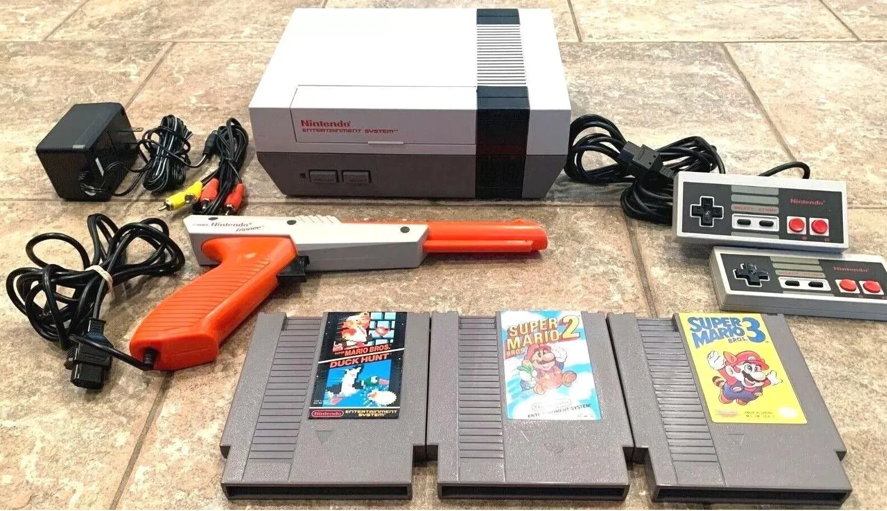
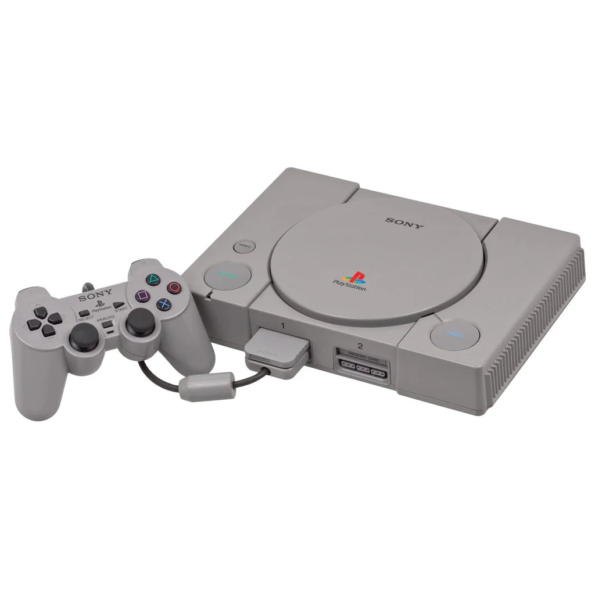
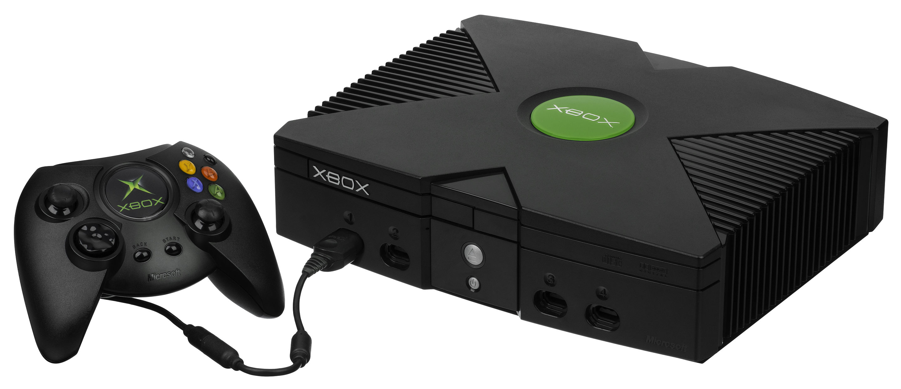
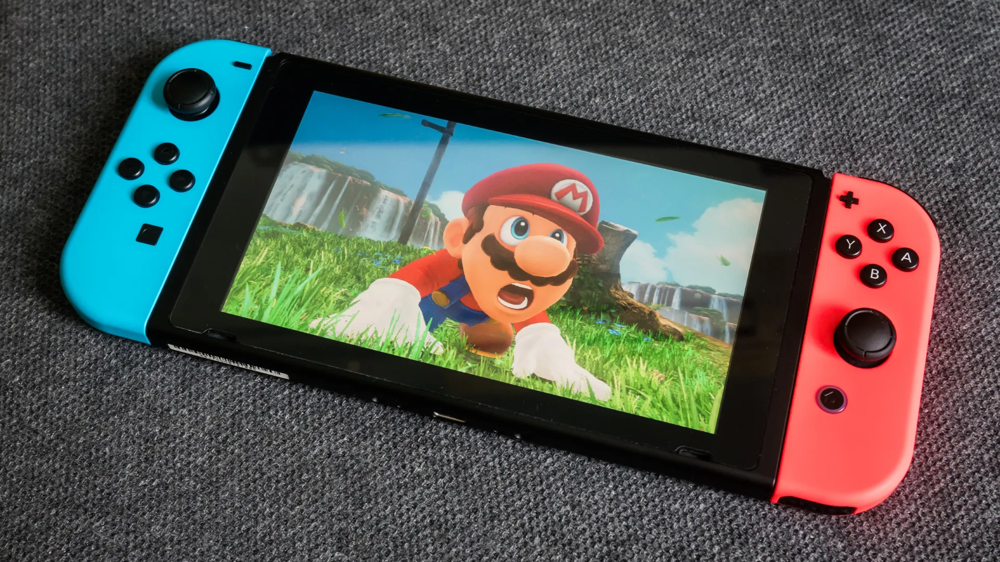
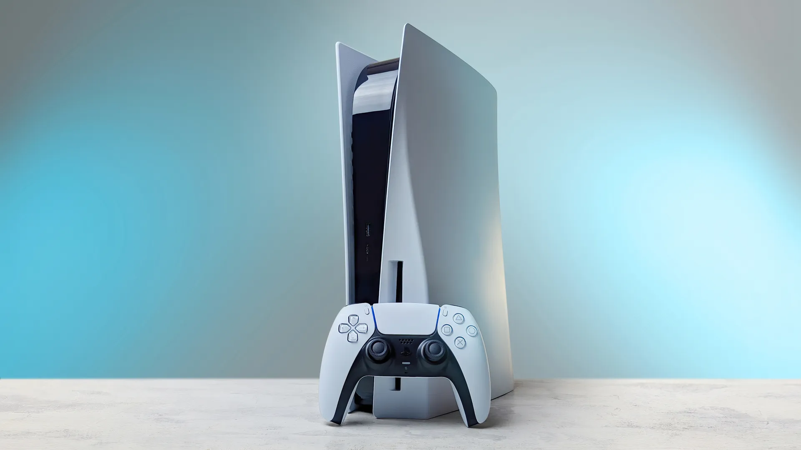

1983 - Nintendo Entertainment System (NES)

The NES introduced iconic franchises like Super Mario, The Legend of Zelda, and Metroid. It played a critical role in re-establishing the video game industry.

The NES introduced iconic franchises like Super Mario, The Legend of Zelda, and Metroid. It played a critical role in re-establishing the video game industry.

With titles like Final Fantasy VII and Metal Gear Solid, Sony's PlayStation revolutionized 3D gaming and became a major industry player.

The original Xbox featured powerful hardware and introduced Xbox Live, laying the foundation for modern online console gaming.

The Nintendo Switch redefined flexible gaming with a hybrid console that functions as both a handheld and a docked device.

With ultra-fast loading times and advanced graphics, the PS5 brought immersive gaming experiences to a new level.